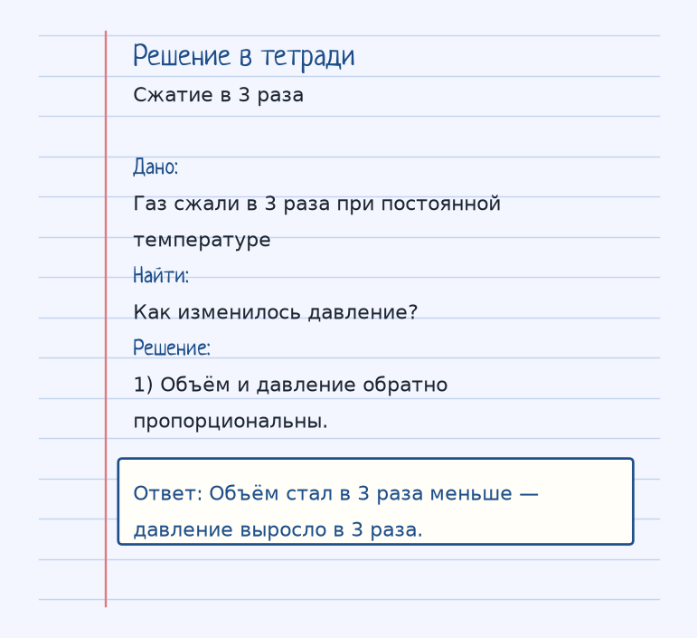
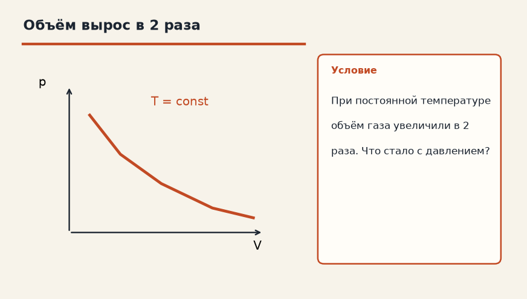
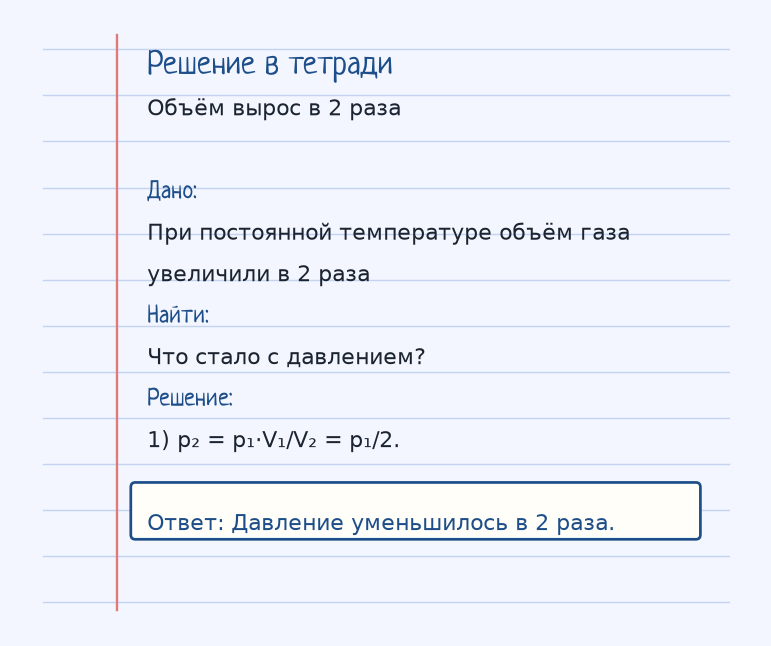

Тема «Закон Бойля-Мариотта (Изотерма)»: физический смысл, единицы величин, типичные ошибки и два разобранных примера.
Схема к условию.
Физический смысл
При постоянной температуре (T = const) давление газа обратно пропорционально его объему. Чем больше сжимаем газ, тем выше давление.
Изотерма означает: температура держится постоянной. Для данной порции идеального газа тогда p·V = const. Сжал объём — во столько же раз выросло давление. Растянул объём — давление упало.
Почему температура не растёт сама? В модели изотермы сосуд медленно обменивается теплом с комнатой, и работа сжатия уходит в тепло наружу. Если сжать газ очень быстро и тепло не успеет уйти, это уже не изотерма.
Шприц с заткнутым носиком показывает закон пальцами: поршень внутрь, объём меньше, давить на палец приходится сильнее.
Формула и единицы
p · V = const
p·V = const при T = const и постоянной массе газа.
Пояснение
Шприц. Затыкаем иглу пальцем и сжимаем поршень — давление внутри растет.
Шприц: заткни носик и вдави поршень. Объём меньше, давление внутри больше.
Типичные ошибки
Закон Бойля-Мариотта не работает, если вместе с объёмом изменилась температура или газ вытек. Порция и T должны быть постоянны.
Разобранные примеры. Решение каждого открывается отдельно.
Разбор 1
Сжатие в 3 раза
Газ сжали в 3 раза при постоянной температуре. Как изменилось давление?
На схеме только условие.
Порядок записи: данные, единицы СИ, искомая величина, ход решения, ответ.
Дано. Газ сжали в 3 раза при постоянной температуре
В СИ.
Найти. Как изменилось давление?
Решение.
Объём и давление обратно пропорциональны.
Объём стал в 3 раза меньше — давление выросло в 3 раза.

Разбор 2
Объём вырос в 2 раза
При постоянной температуре объём газа увеличили в 2 раза. Что стало с давлением?

На схеме только условие.
Порядок записи: данные, единицы СИ, искомая величина, ход решения, ответ.
Дано. При постоянной температуре объём газа увеличили в 2 раза
В СИ.
Найти. Что стало с давлением?
Решение.
p₂ = p₁·V₁/V₂ = p₁/2.
Давление уменьшилось в 2 раза.

Разбор 3
Объём в 5 раз
При постоянной температуре объём газа увеличили в 5 раз. Как изменилось давление?
На схеме только условие.
Порядок записи: данные, единицы СИ, искомая величина, ход решения, ответ.
Дано. T = const, V₂ = 5 V₁
В СИ.
p V = const.
Найти. p
Решение.
Давление уменьшилось в 5 раз.
Уменьшилось в 5 раз.
Разбор 4
Сжатие
Газ изотермически сжали так, что давление выросло с 100 кПа до 400 кПа. Во сколько раз уменьшился объём?
На схеме только условие.
Порядок записи: данные, единицы СИ, искомая величина, ход решения, ответ.
Дано. p₁ = 100 кПа, p₂ = 400 кПа, T = const
В СИ.
p₁ V₁ = p₂ V₂.
Найти. V₁/V₂
Решение.
100 V₁ = 400 V₂, V₁/V₂ = 4.
В 4 раза.
Разбор 5
Нагрев при сжатии
Поршень вдвинули быстро, газ заметно нагрелся. Можно ли сразу писать p V = const?
На схеме только условие.
Порядок записи: данные, единицы СИ, искомая величина, ход решения, ответ.
Дано. T изменилась
В СИ.
Закон Бойля требует постоянной температуры.
Найти. Вывод
Решение.
Процесс не изотермический, формула Бойля не применяется без оговорки.
Нет.
Разбор 6
Давление 2 атм
При T = const давление уменьшили со 150 кПа до 50 кПа. Как изменился объём?
На схеме только условие.
Порядок записи: данные, единицы СИ, искомая величина, ход решения, ответ.
Дано. p₁ = 150 кПа, p₂ = 50 кПа
В СИ.
p V = const.
Найти. V
Решение.
Объём вырос в 3 раза.
Вырос в 3 раза.
Разбор 7
Имя процесса
Как называется процесс при постоянной температуре?
На схеме только условие.
Порядок записи: данные, единицы СИ, искомая величина, ход решения, ответ.